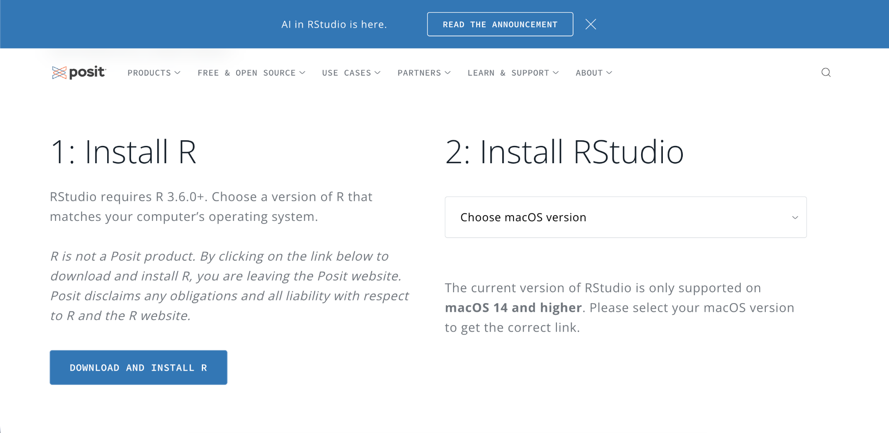
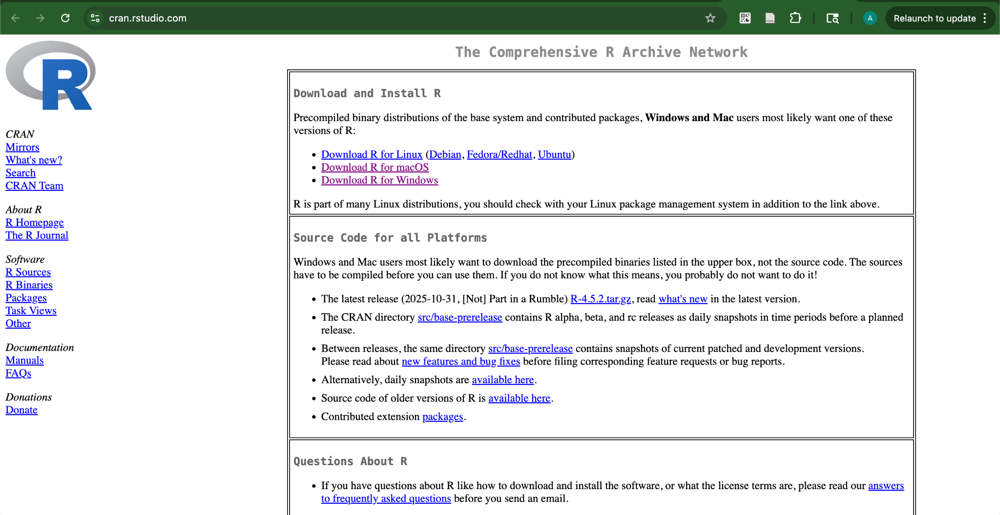
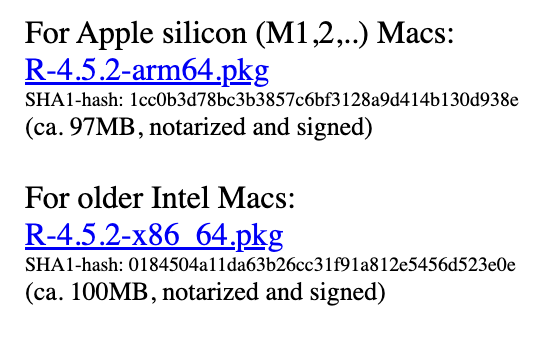
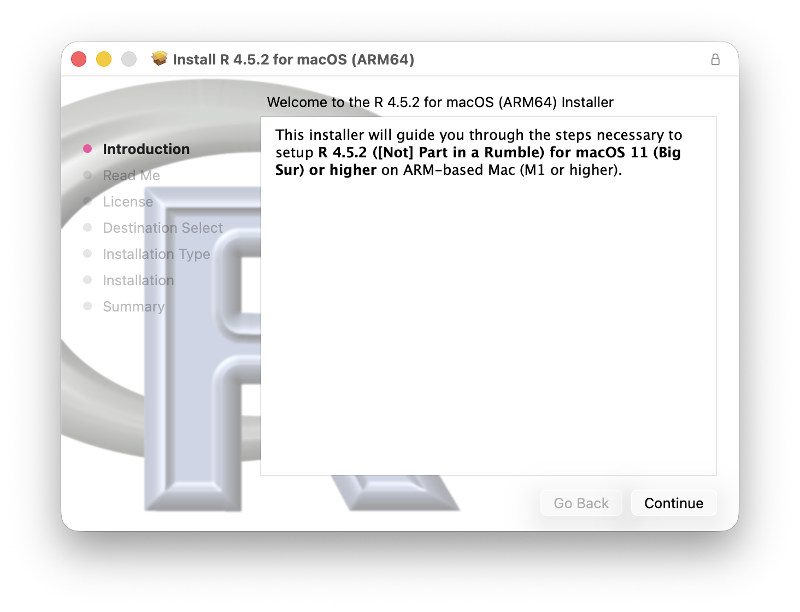
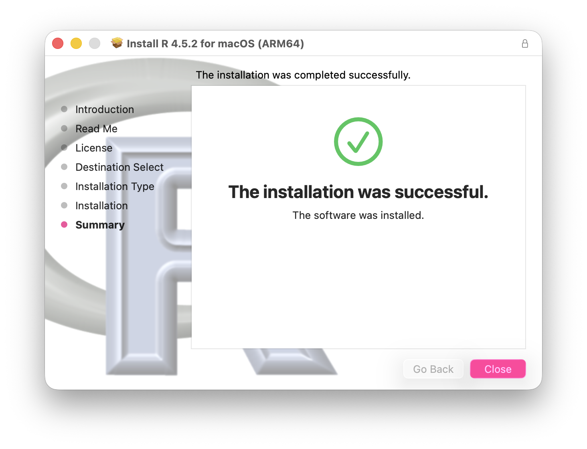
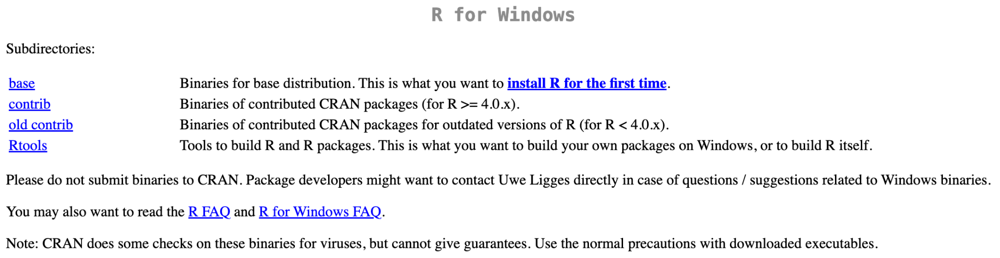
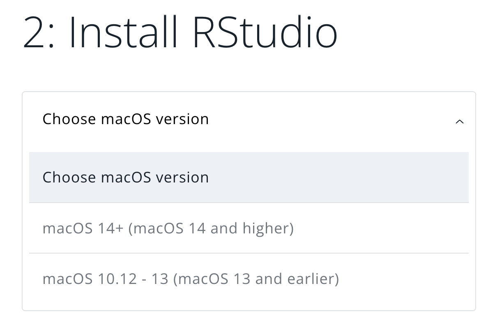
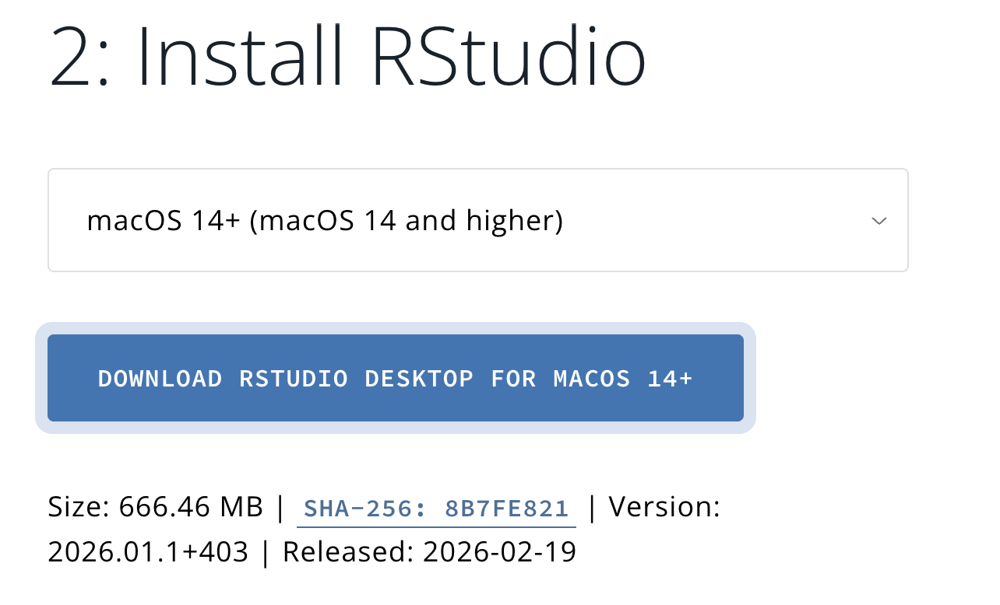
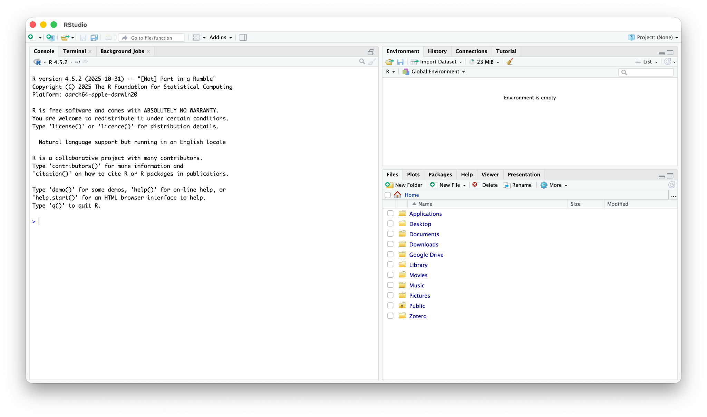
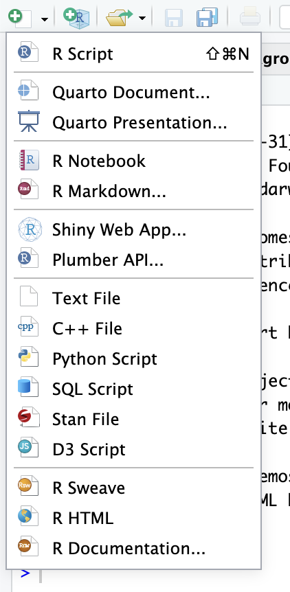

3 RStudio Software
How to use quantitative data analysis software
This chapter introduces researchers to R and RStudio, the primary tools used throughout this playbook for data analysis and reporting. Researchers learn the distinction between R (the underlying programming language) and RStudio (the interface used to write and run R code), then walk through downloading and installing both programs on Mac or Windows. The chapter covers RStudio’s four main panels — the console, script editor, environment, and files/plots/packages/help tab — and explains how each is used in a typical workflow. Researchers also learn the difference between working in the console versus writing reusable code in a script, how to use an RStudio Project so that the working directory is set automatically for importing and saving files, and how to create and organize a Quarto document (.qmd) using code chunks and comments. The chapter closes with a list of common beginner errors and their fixes, preparing researchers to troubleshoot independently as they begin working with real data in later chapters.
start, RStudio, install R, console, script, RStudio project, working directory
RStudio
- Posit RStudio
- R4DS RStudio
- Cheatsheet page
- Cheatsheet PDF
- Fávero, L. P., Belfiore, P., & De Freitas Souza, R. (2023). Introduction to R-based language. In Data Science, Analytics and Machine Learning with R (pp. 7–25). Elsevier. https://doi.org/10.1016/B978-0-12-824271-1.00033-0
In How Code Builds a Plot, you ran R code in your web browser. In this chapter you put R on your own computer, so that you can run code with your own data, save your work, and write your reports.
3.1 What is R and RStudio?
R is a programming language used for statistical computing and quantitative data analysis. RStudio is a user-friendly interface that makes it easier to write and run R code. R performs the computations, data manipulation, and calculations, while RStudio provides tools that help you organize and execute your code. You will need both R and RStudio on your computer to do quantitative data analysis. Once you download both R and RStudio programs, you will NOT need to open and use R. You will use RStudio to do all of your computational programming.
Things you can do in RStudio:
- Run commands
- Perform statistical analysis tests
- Make plots
- Publish reports
- Clean and manipulate data
- Create interactive websites
3.2 Downloading R and RStudio
Because RStudio runs on top of R, R must be installed before installing and using RStudio.
3.2.1 Download R
Go to the following website: https://posit.co/download/rstudio-desktop/
Scroll down to and click “Download and Install R”. This will bring you to the R Project website page.

The Posit download page with “1: Install R” and “2: Install RStudio” From here, select the “Download R for ____” option for your computer software.

The Comprehensive R Archive Network (CRAN) page Follow the instructions below depending on your software.
Mac
Click “Download R for macOS.”
Download the specific package depending on your chip/processor.
GoHint: Apple silicon or Intel?To see if your Mac is silicon or Intel, go to the Apple icon on the top left corner and select About This Mac. If you see Chip followed by Apple M1, M2, M3, or M4, it is silicon; if it says Processor followed by Intel Core, it is Intel.

Choose the package that matches your Mac Follow the steps on your Mac to finish downloading the package. This is similar to how other apps would be downloaded.

The R installer for macOS 
The installation was successful
Windows
Click “Download R for Windows.”
Click “install R for the first time.”

The R for Windows page on CRAN Click the “Download R-4.x.x for Windows” link at the top of the page (the version number changes over time).
Open the file and follow the steps on your computer to finish downloading the package.
3.2.2 Download RStudio
Go back to the Posit website: https://posit.co/download/rstudio-desktop/
Scroll down to “Install RStudio.”
Return to the Posit download page for step “2: Install RStudio” If the page shows a drop-down, select the option that matches your computer’s operating system version.

Select your operating system version Press “Download RStudio Desktop for _______.”

Download RStudio Desktop For both Mac and Windows, finish downloading RStudio by following the prompts on your computer, similar to how other apps are downloaded.
You have now downloaded RStudio. Open RStudio, and it should look like this:

RStudio when you open it for the first time
3.4 Scripts and Quarto Documents
A script is a text file that contains code. It allows us to enter commands and save our work, then return to it later. Unlike the console, where commands run immediately and are not saved, scripts allow us to store a set of commands for future use or sharing.
3.4.1 Creating and saving a new script
In the upper left hand corner, press the green icon with the plus sign, then click “R Script.” A blank script will appear in the script editor.
To save a new script, press the single disk icon in the toolbar. A pop-up should appear to save the script. Name the file and save it to the appropriate place.

3.4.2 RStudio Projects and the Working Directory
The working directory is the folder on your computer where R looks for files and saves new ones. If the file you want to import is not in the working directory, R will not be able to find it and you will see a “cannot open file” error.
The easiest way to manage the working directory is to let RStudio do it for you with an RStudio Project. A project is simply a folder on your computer that contains a small .Rproj file. Whenever you open the project, RStudio automatically sets the working directory to that folder. You will keep everything for your individual report — data files, R scripts, and Quarto documents — together in this one folder.
Create your project (do this once)
- Click File > New Project…
- Choose New Directory, then New Project.
- For Directory name, type
Lastname_FRI(using your own last name, with no spaces). - For Create project as subdirectory of, click Browse and choose a place you can find again, such as your Documents folder.
- Click Create Project. RStudio restarts inside your new project.
You will know you are in your project when its name (Lastname_FRI) appears in the top right corner of RStudio, and the files tab shows the contents of your project folder, including the file Lastname_FRI.Rproj.
Open your project (do this every time)
Always start your work by opening the project, not an individual file. You can either:
- double-click the
Lastname_FRI.Rprojfile in your project folder (Finder on Mac or File Explorer on Windows), or - in RStudio, click File > Open Project… (or use the project menu in the top right corner) and select your
.Rprojfile.
To confirm that the working directory is your project folder, copy and paste this code into the console (which is the tab in the bottom left corner of RStudio) and then press “return” (on a mac) and “enter” on a windows computer:
getwd()Keep your files in the project folder
Move or download your data files into your project folder. They will then show up in the files tab. Save your R scripts and Quarto documents in the same folder.
Because the working directory is the project folder, you can import data using just the file name:
read.csv("alldata_vaccinations.csv")When a Quarto document (.qmd) is rendered, R looks for data files starting from the folder where the .qmd file is saved. If your .qmd file and your data file are both in your project folder, the file name alone will work in the console and when you render.
setwd() and full file paths
You may see code that sets the working directory by hand or imports a file with its full location on one person’s computer:
setwd("/Users/yourname/FRI")
read.csv("/Users/yourname/Downloads/alldata_vaccinations.csv")This code only works on that one computer. It will fail on your teammates’ computers and on your instructor’s computer, because the folder /Users/yourname/ does not exist there. With a project and file names only, the same code runs for everyone who has the project folder.
Go to Tools > Global Options > General. Under Workspace, uncheck “Restore .RData into workspace at startup” and set “Save workspace to .RData on exit” to Never. This way, your results always come from the code in your script or Quarto document rather than from leftover objects.
3.4.3 Quarto
Quarto is a publishing system that allows us to combine text and code to produce reports, presentations and websites. Quarto documents are made using .qmd files. To open a .qmd file and begin a Quarto document, press the green plus sign in the upper left hand corner, then click “Quarto Document.” Quarto documents are saved the same way as scripts.
Text written normally in Quarto appears as regular text in the output. In order to include and run code in our final reports, code must be written in code chunks.
The first time you render a Quarto document, RStudio may ask to install packages it needs (such as rmarkdown and knitr). Click Yes.
3.4.4 Running code
Code in the script can be sent to the R console for execution.
- To run the whole script: press the “Source” button on the upper right of the script editor (or select all of the code and press “Run”).
- To run one or a few lines: highlight the code you want to run, then press the “Run” button, or use the shortcut, Cmd + Enter (Mac) / Ctrl + Enter (Windows).
3.4.5 Organizing scripts
We can organize our scripts by including comments, using the # symbol. Any text in the line after the symbol will appear in the console, along with the following code and output, but will not be executed. As our script begins to fill up, it can get confusing knowing what each piece of code is for. If we use the # symbol above each section of code, we can note the purpose of the code. Additionally, when executing code, we may run into errors. The # symbol will help us locate the errors from the console in the scripts.
3.4.6 Common errors
As you begin working in RStudio, you may encounter some errors. These are normal and can usually be fixed easily. A list of common errors is below:
- Object not found → This means that the object (such as a variable or dataset) has not been created yet. Make sure you have run the code that defines the object before trying to use it.
- Cannot open file → This usually means that RStudio cannot find the file you are trying to import. Check that you have opened your RStudio Project, that the file is in your project folder, and that the file name is spelled exactly right (including the file type, such as
.csv). - Could not find function → This error occurs when a function is not recognized. This is often because a package has not been loaded. Make sure you have run
library(thepackagename)before using functions from that package. - There is no package called… → This means the package has not been installed yet. Run
install.packages("thepackagename")to install it, thenlibrary(thepackagename)to load it.
3.5 Summary
3.5.1 Terminology
- Console: The area where R runs code and displays output
- Script: A file where code is written and saved for later use
- Object: Any item created and stored in R, such as a variable, dataset, or result of a calculation
- Working Directory: The folder where RStudio looks for and saves files
- RStudio Project: A folder with an
.Rprojfile; opening it sets the working directory to that folder automatically - Environment: Displays all objects (such as variables and datasets) created during a session
- Package: A collection of functions and tools that extend R’s capabilities
- Function: A command that performs a specific task
- Quarto Document: A file used to create reports that combine code, output, and text